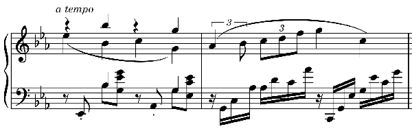

フォーレ: 夜想曲第2番・第4番
フォーレの夜想曲については、40年来ジャン＝フィリップ・コラールのものを好んで聴いてきて、自分の中では何となく「基準」になってしまっている。
Fauré: Nocturnes
Jean-Philippe Collard
(1974)
録音も悪くなく今でも十分満足なのだが（但し、現時点でSpotifyではあろうことか第1番のBパート以降が切れてしまっている）、近年の演奏傾向はどうなっているのだろうかという興味から、2010年以降の夜想曲全曲を入れたアルバムの中から4種類を選んで聴いてみた。
フォーレの夜想曲は第6番や最後の第13番が最高とされ、初期のものはサロン風だとかショパンの影響が残るとか言われてあまり高く評価されないことも多いのだが、私はその初期に属する香気溢れる第2番（ロ長調）と第4番（変ホ長調）を第6番に劣らず愛好しており、ここでもその二曲を中心に書くことにする（第13番は別格）。
Fauré: Nocturnes
François Dumont
(2020)
これは1922年製Gaveau（ガヴォー）のピアノを使ったとクレジットされている。初めて聴いたピアノだが、十分健康的な個体のようで、一部小さい共振ノイズがあったりするものの、まるでクレヨンを思わせる柔らかい音色は魅力的。第2番A部のテンポはかなり遅く取っている。残響の少ないリアルな録音。
Fauré: Nocturnes
Eric Le Sage
(2018)
比較的高速テンポで、第4番のA部などほとんど四分音符=70に近い。マルグリット・ロンの残したこの4番の演奏も高速（自著で、楽譜の指定（四分音符=56）は遅すぎると書いている）だが、その中でも緩急による何とも言えない表情付けが時代を物語っているような感じを受ける。ルサージュは同傾向ではあるもののもっと現代的。そもそも第4番A部のごく単純な音型は、弾き方・表現の許容範囲が広いだけにセンスが表れる所で、まさに演奏者により千差万別なのがおもしろい。一方で聴き手としては主観的な好き嫌いが出やすい部分である。
Fauré: Nocturnes
Stefan Irmer
(2010)
1901年製のヴィンテージもののスタインウェイを弾いているとのこと。堅牢なスタインウェイだけに1901年でも古いということはなく、むしろ素晴らしく深い艶のある音だ。このCDはグラモフォン誌のレビューで酷評されていたが、私は好みである。13曲を並べ替えて弾いていて（例えば第13番は2曲目）、順番通り聴き通してフォーレの生涯を青春から晩年まで辿った場合に徐々に深まる寂しさ・辛さがストレートに来ないのはありがたい。残響が豊かな録音も嬉しい。但し、第13番のコーダで一瞬長調に転調する所で半音低い音を鳴らしているのは、何か意図があるのかもしれないが、違和感を覚えた（そういえばコラールもこの曲の別の場所で半音違う音を出していた）。
Fauré: Nocturnes
Daniel Grimwood
(2014)
楽譜出版社のペータースがCDも出していたとは知らなかった。ジャケットにこのロゴがあると何となく模範演奏的なものを予期してしまうが、センスあふれる個性的な演奏である。第2番中間部からA部に戻る、長いトリルにかぶさってオクターブで主題が再び始まる所（この曲の最も美しい箇所である）における音色バランスと奥行き感が素晴らしい。第4番では中間部後半、ffでクライマックスを作るappassionato部分の立体感が随一だし、それに続く主題再現部に新たに現れる低音のスタッカートを、楽譜に忠実というか、むしろノンペダルで強調し、ちょっと軽い感じにしている。ここまでこだわった演奏は初めて聴いたかもしれない。

(Feb. 11, 2023)